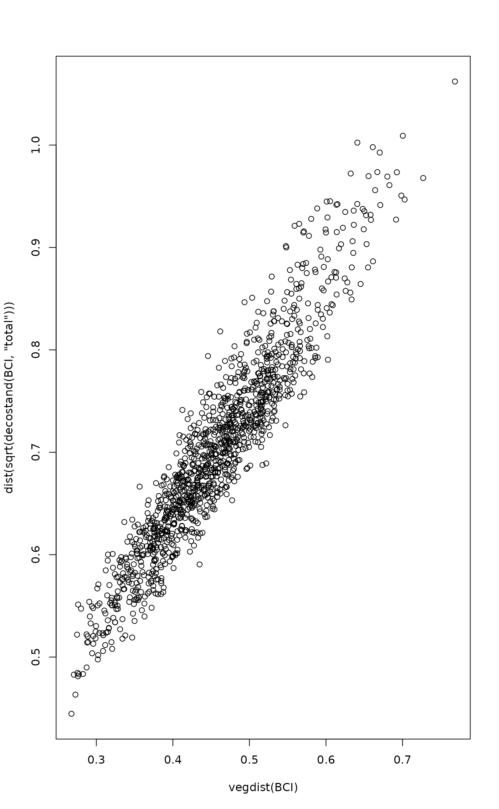

Add or Replace Species Scores in Distance-Based Ordination
sppscores.RdDistance-based ordination (dbrda,
capscale, metaMDS) have no information
on species, but some methods may add species scores if community
data were available. However, the species scores may be missing (and
they always are in dbrda), or they may not have a
close relation to used dissimilarity index. This function will add
the species scores or replace the existing species scores in
distance-based methods.
Details
Distances have no information on species (columns, variables), and
hence distance-based ordination has no information on species
scores. However, the species scores can be added as supplementary
information after the analysis to help the interpretation of
results. Some ordination methods (capscale,
metaMDS) can supplement the species scores during the
analysis if community data was available in the analysis.
In capscale the species scores are found by projecting
the community data to site ordination (linear combination scores),
and the scores are accurate if the analysis used Euclidean
distances. If the dissimilarity index can be expressed as Euclidean
distances of transformed data (for instance, Chord and Hellinger
Distances), the species scores based on transformed data will be
accurate, but the function still finds the dissimilarities with
untransformed data. Usually community dissimilarities differ in two
significant ways from Euclidean distances: They are bound to maximum
1, and they use absolute differences instead of squared
differences. In such cases, it may be better to use species scores
that are transformed so that their Euclidean distances have a good
linear relation to used dissimilarities. It is often useful to
standardize data so that each row has unit total, and perform
squareroot transformation to damp down the effect of squared
differences (see Examples).
Function dbrda never finds the species scores, but it
is mathematically similar to capscale, and similar
rules should be followed when supplementing the species scores.
Function metaMDS uses weighted averages
(wascores) to find the species scores. These have a
better relationship with most dissimilarities than the projection
scores used in metric ordination, but similar transformation of the
community data should be used both in dissimilarities and in species
scores.
Value
Replacement function adds the species scores or replaces the old scores in the ordination object.
Examples
data(BCI, BCI.env)
mod <- dbrda(vegdist(BCI) ~ Habitat, BCI.env)
## add species scores
sppscores(mod) <- BCI
## Euclidean distances of BCI differ from used dissimilarity
plot(vegdist(BCI), dist(BCI))
## more linear relationship
plot(vegdist(BCI), dist(sqrt(decostand(BCI, "total"))))

## better species scores
sppscores(mod) <- sqrt(decostand(BCI, "total"))